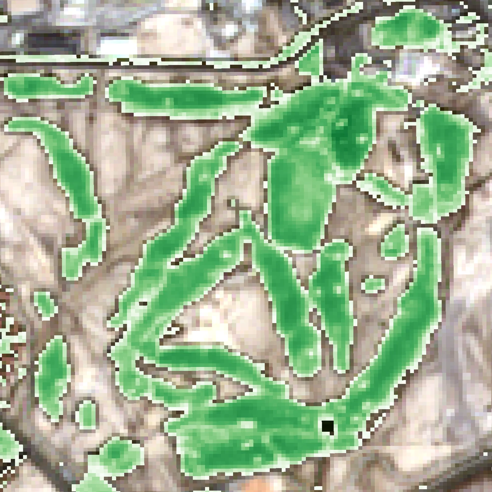
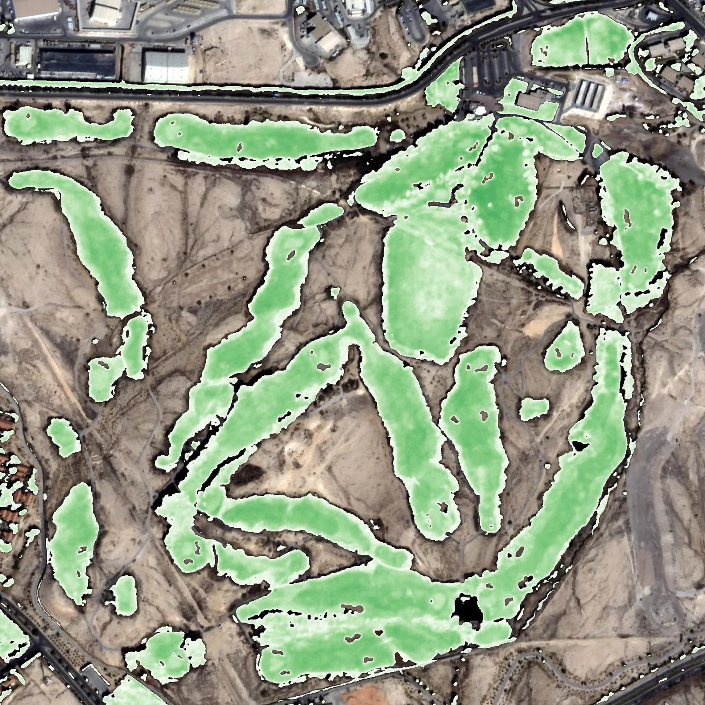
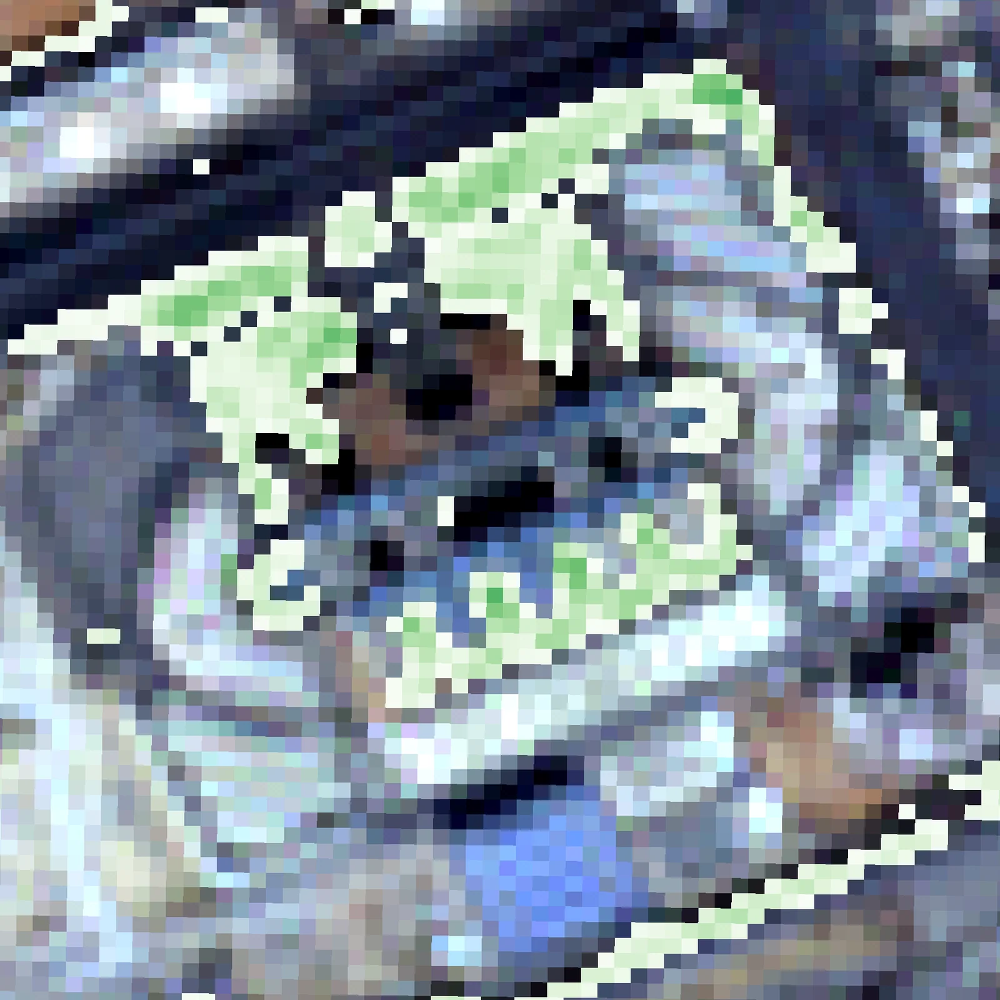
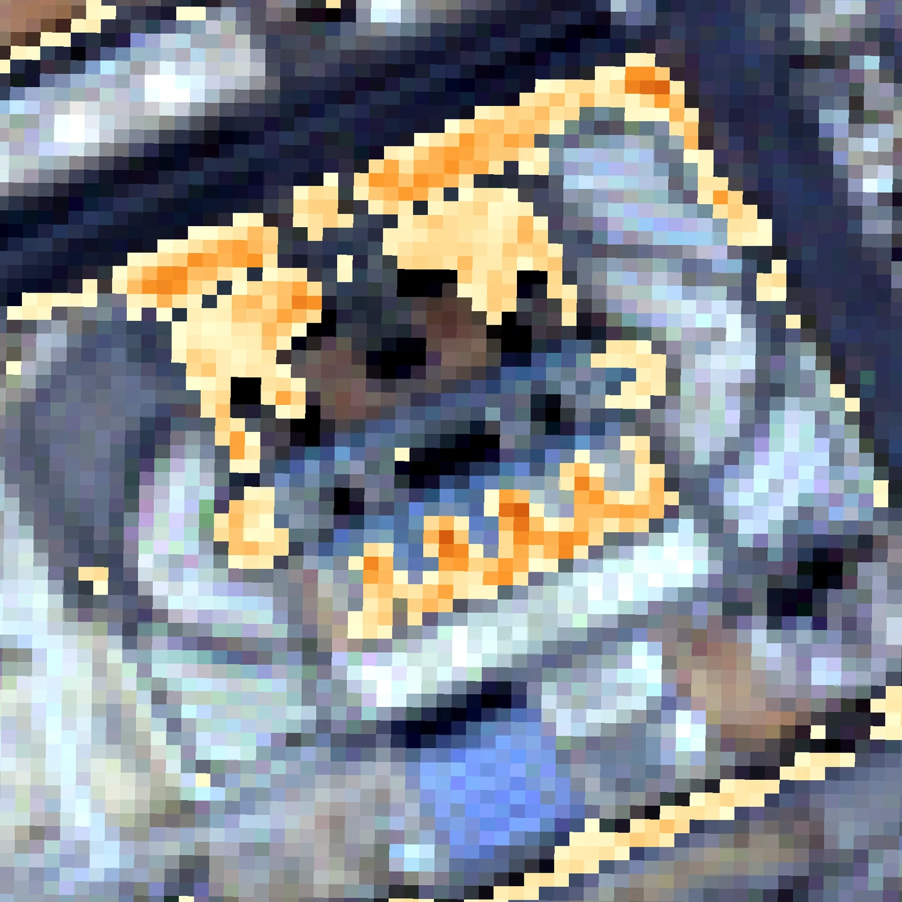

← 프로젝트 목록← All projects
SpaceUp 경진대회 — 도시녹지 모니터링SpaceUp Competition — Urban Greenery Monitoring
중동 도시의 녹지를 위성으로 감시하는 대시보드 프로토타입. 건조 기후에서 식생지수가 어떻게 다르게 작동하는지를 다뤘음.A dashboard prototype for monitoring urban greenery in the Middle East, working through how vegetation indices behave differently in arid climates.
배경 · 목표Background
- 사우디아라비아 주최 SpaceUp 우주·위성 활용 경진대회 Track 2 참가.
- 도시 녹지(Urban Greenery) 위성 기반 모니터링을 주제로 선정함.
- Entered Track 2 of SpaceUp, a space and satellite applications competition hosted by Saudi Arabia.
- Chose urban greenery monitoring as the theme.
방법Method
- Sentinel-2 기반 도시 식생지수 산출 및 녹지 분류.
- 건조 지역 특성에 맞춘 지수 임계값 조정 — 일반 NDVI 임계값이 사막 도시에서는 작동하지 않음.
- 녹지 모니터링 대시보드 프로토타입 개발 (v1.0 → v1.3).
- 중동 지역 위성 분석 논문 및 argan tree 분류 사례 검토.
- Computed vegetation indices and classified green cover from Sentinel-2.
- Re-tuned index thresholds for arid conditions — standard NDVI cut-offs do not work in a desert city.
- Built a greenery monitoring dashboard prototype (v1.0 → v1.3).
- Reviewed Middle East remote-sensing literature, including argan tree classification cases.
결과Results
- 공식 제출 완료 — SpaceUp Application (Track 2)
- 도시녹지 NDVI 대시보드 프로토타입 완성
- 도시 구역별 녹지 분포 분류 결과 산출
- Official submission delivered — SpaceUp Application (Track 2).
- A working urban-greenery NDVI dashboard prototype.
- Green-cover classification by urban district.





배운 점 · 한계What I learned · Limitations
- 국제 경진대회 참가와 영문 제안서 작성 경험을 쌓았음.
- 기후대가 다르면 같은 지수라도 임계값을 다시 잡아야 한다는 것을 실제로 겪었음.
- Gained experience with an international competition and English proposal writing.
- Learned first-hand that the same index needs different thresholds in a different climate zone.
관련 코드Code
eo/sentinel-2/vegetation/
저장소는 센서 → 위성 → 기법 순으로 정리돼 있고, 각 폴더에 입력·출력 표가 있음.The repository is organised by sensor, satellite and technique; each folder documents its inputs and outputs.
코드 저장소는 비공개입니다. 열람이 필요하시면 아래 연락처로 알려주시면 접근 권한을 드립니다.The code repository is private. Email me and I will grant you access.
산출물Deliverables
- SpaceUp Track 2 공식 제출본
- 녹지 대시보드 프로토타입
- Official SpaceUp Track 2 submission
- Greenery dashboard prototype
원본 보고서와 발표자료는 사내 자료로 공개하지 않음. 분석 코드는 GitHub에 정리되어 있음.Source reports and decks are internal and not published here. Analysis code is organised on GitHub.